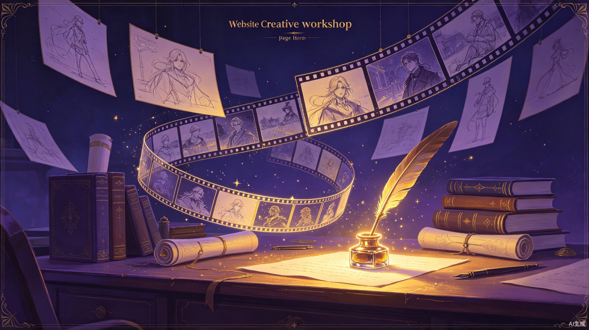

创意工坊
把梦境变成小说、电影、动画的灵感源泉
创作模板
从梦境出发，选择适合的创作模板，快速生成专业级创意内容
创作空间
基于梦境自动生成的故事大纲预览
星河旅人的梦境
故事大纲
故事背景
在一座漂浮于星河之间的古老图书馆里，每一本书都是一个未完成的梦境。旅人偶然闯入这片被遗忘的空间，发现书页上的文字正在缓缓消失。为了保存这些即将湮灭的故事，旅人必须在梦境完全消散前，找到连接每个故事的隐秘线索，拼凑出图书馆被遗忘的真相。
主要角色
星河旅人
沉默寡言的流浪者，拥有在梦中书写现实的能力，却为此失去了所有清醒时的记忆。
守卷人
图书馆最后的守护者，以文字为形、以墨水为血，试图在最后时刻挽救一切。
墨痕
从消散的文字中诞生的意识碎片，既不属于梦境也不属于现实，游走于两者之间。
核心冲突
图书馆正被名为"静默潮汐"的力量吞噬，每一个被遗忘的梦境都在加速消散。旅人发现，拯救图书馆的唯一方法是将所有未完成的故事连接成一个完整的叙事闭环——但这意味着必须亲手改写其中一些故事的结局，包括属于自己记忆的那个故事。
故事走向
第一幕
旅人坠入星河图书馆，遇见守卷人，得知梦境消散的危机，开始踏上收集故事碎片的旅途。
第二幕
旅人在各个梦境中穿行，逐渐发现守卷人隐瞒的秘密，墨痕的出现让一切变得复杂。
第三幕
旅人面对最终抉择——改写结局以拯救图书馆，或是保留原貌让故事自由消散。